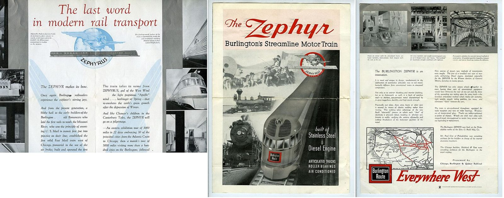

References / Editorial / 298
Pioneer Zephyr brochure, 1934
The Burlington’s brochure for “Burlington’s Streamline Motor Train”: script lettering trailed by speed lines, a winged-god badge, and photographs of the stainless-steel train.
- Source
- Wikimedia Commons: 1934 Pioneer Zephyr brochure
- Creator
- Chicago, Burlington and Quincy Railroad; printed by Gusdorf-Warren Printing Company, Chicago (Commons)
- Made
- 1934
- Style
- Streamline Moderne (agent-proposed, not yet reviewed by a person)
- Moods
- Streamlined, promotional, optimistic
- Evidence
- Downloaded and inspected the Commons scan of the front, middle, and back of one copy (scanned from an eBay item, per Commons) at 1920 × 756 px; each page is about 530 × 740 px in that image. Small body text was not fully legible.
- Reviewed
- Rights
- Open license, stored. License: public domain. Rights policy

Context
Commons says the Chicago, Burlington and Quincy Railroad issued the brochure to announce the Pioneer Zephyr’s entry into regular service, which began on 11 November 1934. Commons.
The back page credits the Edw. G. Budd Manufacturing Company as builder, Paul Cret as consulting architect for the interior, and Holabird & Root as consulting architects for the train’s styling (read on the scan). See also Pioneer Zephyr.
Observed
- The cover title “The Zephyr” is set in large red script; thin horizontal lines trail from the left of the letters.
- Below it, “Burlington’s Streamline Motor Train” is set in black sans-serif on a pale pink band.
- A round badge shows the wind god Zephyrus in the clouds above a train with speed lines, ringed in red.
- A photomontage runs from a stagecoach and an old steam locomotive at upper left to the nose of the stainless Zephyr at lower right; white capitals list “Stainless Steel”, “Diesel Engine”, and technical features.
- The inside spread has red serif italic headings, a large pale-blue winged Zephyrus with a train in profile, and photographs of the train.
- The back page ends with the red Burlington Route box and the slogan “Everywhere West” in red italic with a trailing underline.
Why it belongs
The brochure shows speed lines as a graphic device in 1934, attached to script lettering and a badge. The photomontage from stagecoach to streamliner states the style’s theme: speed as progress.
Borrow
Trail three to five thin horizontal lines from the first letter of a display word.
Set a round emblem on a band of speed lines as a logo.
Measured
Machine-extracted by tools/image-traits.py on . Full measurement.
- Mean chroma
- 0.05
- Palette
- #f1f1e2 24%
- #ffffff 11%
- #f1f5f7 5%
- #cedfea 5%
- #80837d 4%
- #72766e 4%
- #161914 4%
- #bbbcb5 4%

